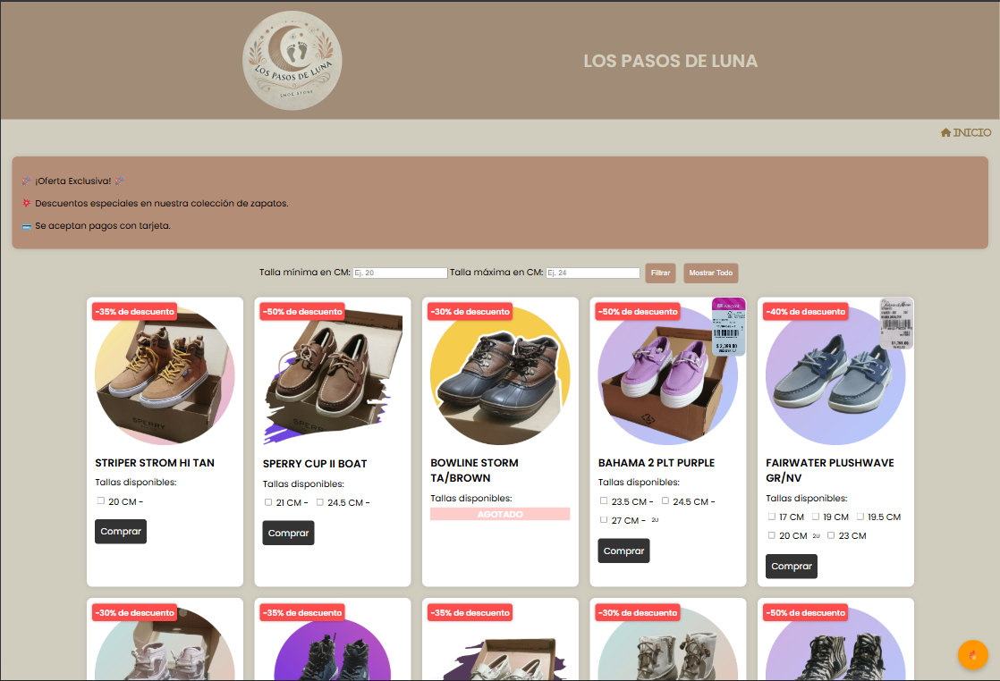

Tienda en línea de zapatos de cuero y accesorios para eventos y fotografía. Filtros por talla, promociones y pago con tarjeta o efectivo.

Los Pasos de Luna es una tienda en línea con colección de zapatos de cuero artesanal. El sitio permite a los usuarios filtrar productos por talla mínima y máxima en centímetros para encontrar el mejor ajuste.
Cuenta con secciones de ofertas exclusivas, descuentos especiales y facilidades de pago con tarjeta o en efectivo. La página está alojada bajo el dominio de Fase Lunar, integrando ambos negocios del mismo cliente.
El proyecto demuestra capacidad para desarrollar tiendas en línea funcionales con catálogo de productos, filtros interactivos y flujo de compra claro para el usuario.
Tecnologías usadas